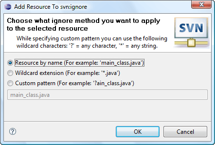

|
|
|
There is sometimes a necessity to ignore some resources while synchronizing. For example some temporary files were created and have been used by the IDE or some files used only by specific developer located in the project folder, of course there is no necessity to commit them and even to let the Subversion® care about them. That's why the svn:ignore facility is added. To add a resource to svn:ignore the user should select the resource choose 'Team>Add to svn:ignore...' menu item from a resource pop-up menu or 'Add to svn:ignore...' of SVN main menu group.
This is how the 'Add To svn:ignore Dialog' looks like:
